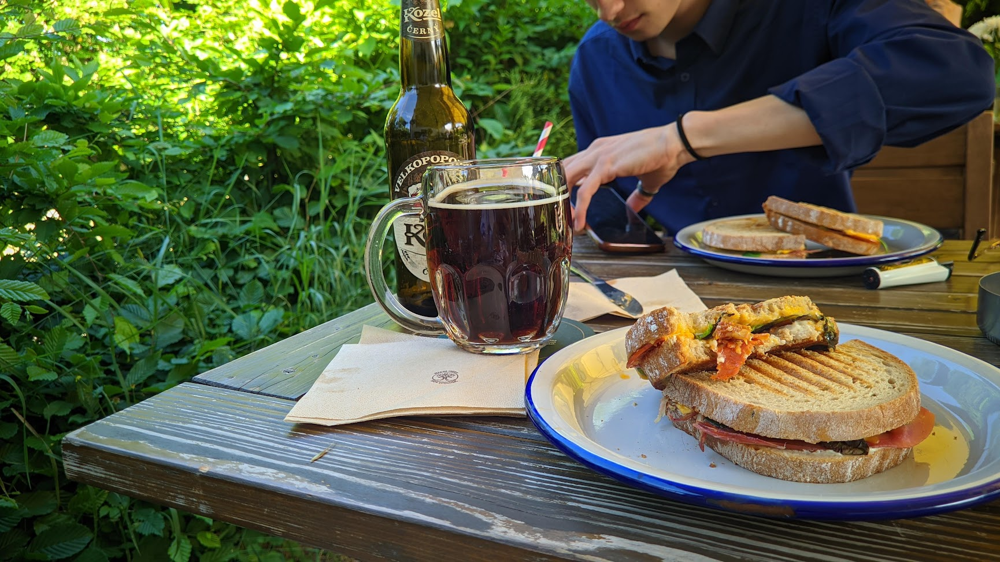
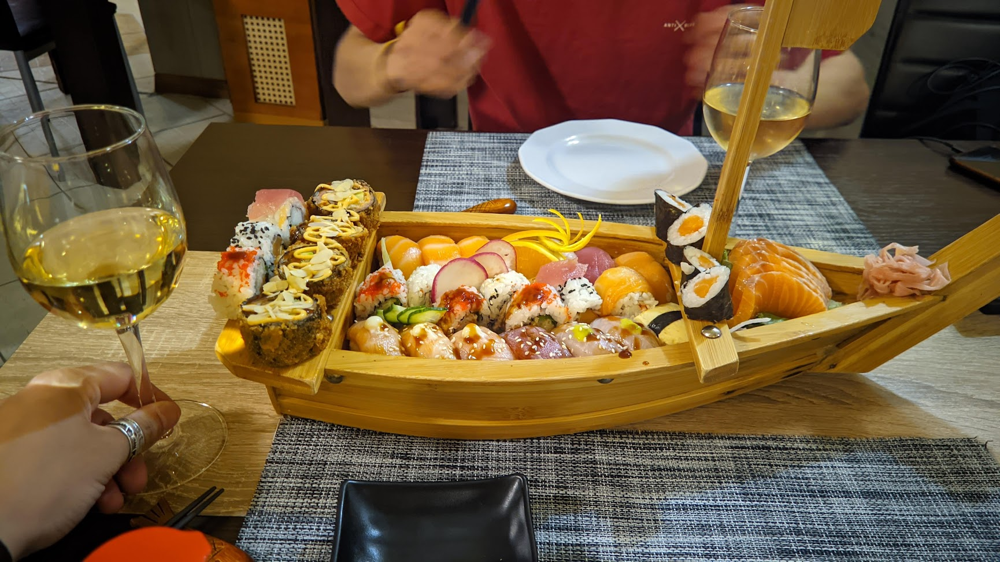
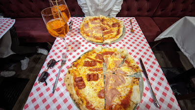

Bystro Cafe | Praag
★ ★ ★ ★ ☆
Dit cafe kwamen we boven op de heuvel in praag tegen en we konden wel een stevige lunch gebruiken. op dit moment hadden we al de hele ochtend / middag gelopen dus we moesten onze energie wel weer op peil brengen met een dik broodje en een biertje! de Broodjes vielen goed in de smaak, de service was iets aan de trage kant. maar het personeel was wel heel vriendelijk. verder hebben we niet persé goedkoop gelunchd, want het blijft een restaurant op de heuvel van de hoofdstad. Als je in praag
bent is dit zeker een aanrader!

Ennmann Japán | Boedapest
★ ★ ★ ★ ☆
In Boedapest hadden wij tijdens de eerste dag enorm veel zin gekregen in sushi, dus gingen we opzoek naar een sushi restaurant in de stad. Het restaurant lag langs de Donau,
maar we zaten binnen dus we hadden helaas geen uitzicht van het parlementsgebouw. Qua service waren de serveerster enigzins aan de trage kant, maar we hadden ook een sushiboot besteld, dus dat was wel logisch. verder was de Sushi heerlijk en hebben we een vrij normale prijs betaald. Als je zin hebt in sushi als je in Boedapest bent, dan is dit de place to be!

Pizzaria Al Vaporetto | Venetië
★ ★ ★ ☆ ☆
We hebben de eerste avond in Venetië hier gegeten en de sfeer was heel apart. Hier werden traditionele steenovenpizza gemaakt, precies wat je wilt hebben in Venetië! Wij begonnen beide met een Aparol Spritz die lekker meer zeer duur was, en vervolgens kwamen onze pizza's met een 15 minuten tot half uur richting onze tafel, zeer respectabel aangezien hoe vol het zat. De pizza was lekker, maar was niet veel bijzonderder dan in Nederlandse pizzaria's. ook waren de pizza's erg duur maar het personeel was echt heel aardig.